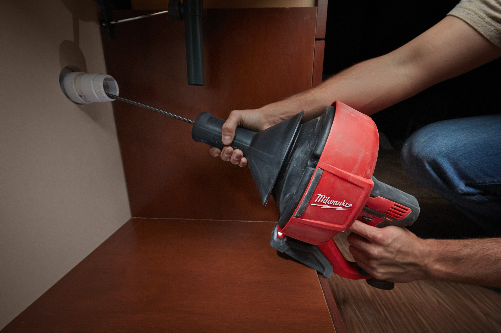
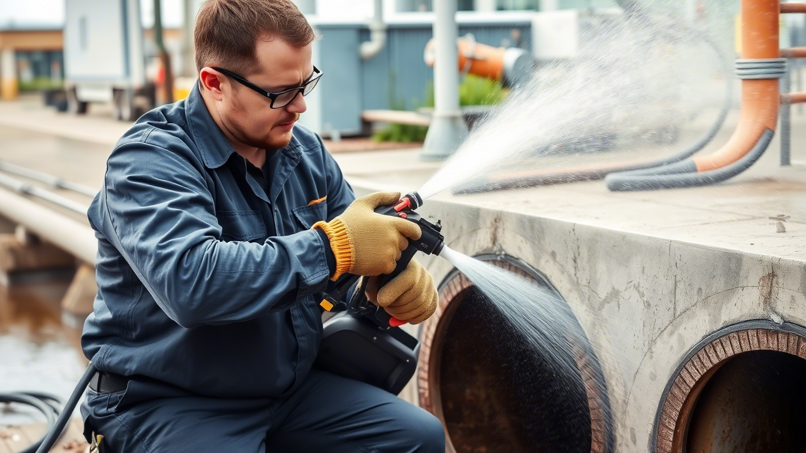

Почему выбирают нас
Профессионализм и опыт
- Многолетний опыт работы: Наши мастера имеют богатый опыт в решении любых сантехнических проблем.
- Квалифицированные специалисты: Все наши сотрудники проходят регулярное обучение и сертификацию.
- Современное оборудование: Мы используем только профессиональные инструменты и технологии.
Оперативность и доступность
- Круглосуточная служба: Мы работаем 24/7, чтобы помочь вам в любое время дня и ночи.
- Быстрое реагирование: Наши мастера приезжают в течение 30–60 минут после обращения.
- Экстренный выезд: Специалисты всегда готовы устранить аварийные ситуации.
Качество и надёжность
- Гарантия на все работы: Мы уверены в качестве наших услуг и предоставляем гарантию до 12 месяцев.
- Долговечные решения: Мы не просто устраняем проблемы — мы предотвращаем их повторное возникновение.
- Чистота и порядок: После выполнения работ мы оставляем помещение чистым, как будто ничего и не случилось.
Наши услуги

Прочистка труб
Профессиональная очистка засоров в трубах.

Очистка канализации
Глубокая очистка канализационных систем.
Экстренный выезд
Мы работаем круглосуточно, чтобы помочь вам.
Оперативность и качество
Мы гарантируем быструю реакцию и высочайшие стандарты качества при выполнении всех работ.
Цены
Стоимость наших услуг зависит от сложности работ. Закажите бесплатную консультацию прямо сейчас!
Как записаться на услугу:
- Шаг 1: Позвоните нам или оставьте заявку онлайн.
- Шаг 2: Мы анализируем вашу проблему и рассчитываем стоимость.
- Шаг 3: Наши специалисты выполняют работу.
- Шаг 4: Наслаждайтесь чистыми трубами!
Отзывы клиентов
"Очень быстро помогли с засором. Рекомендую!" - Иван
"Профессиональные и вежливые сотрудники." - Анна